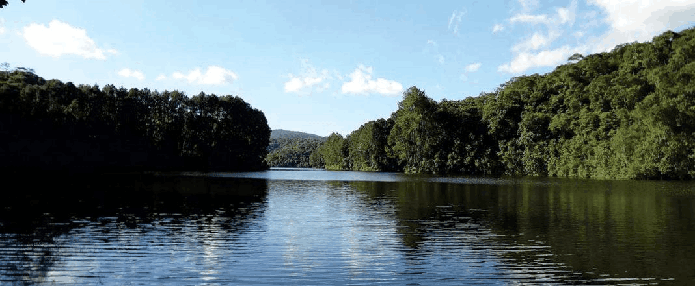
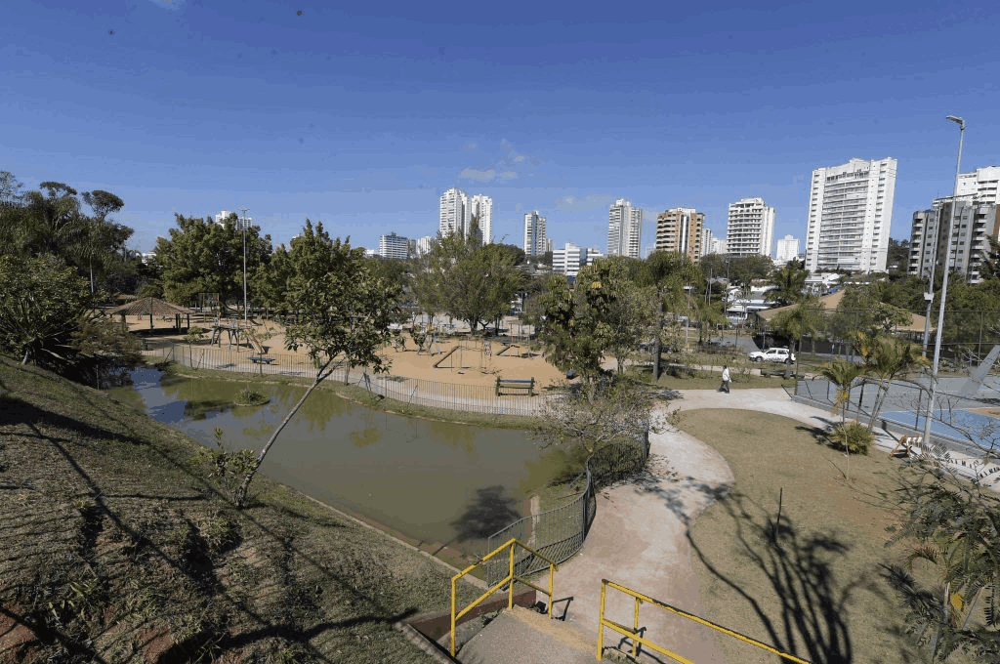
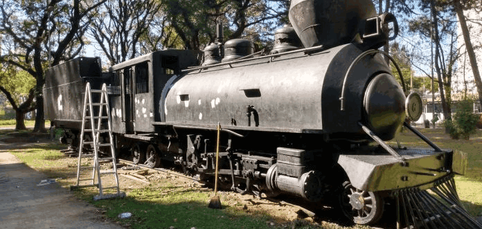
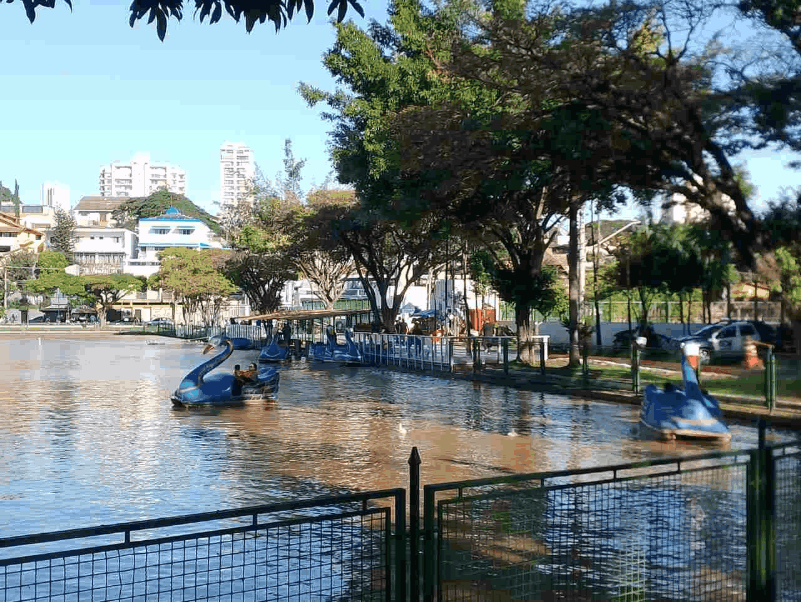
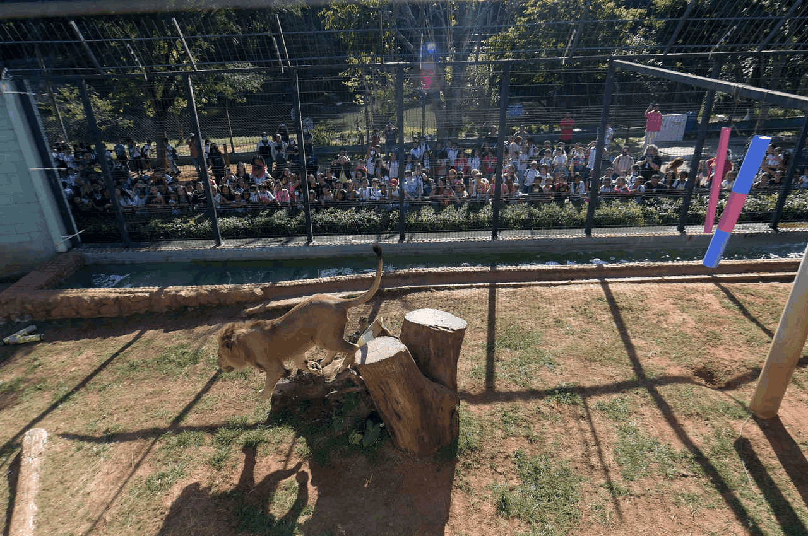
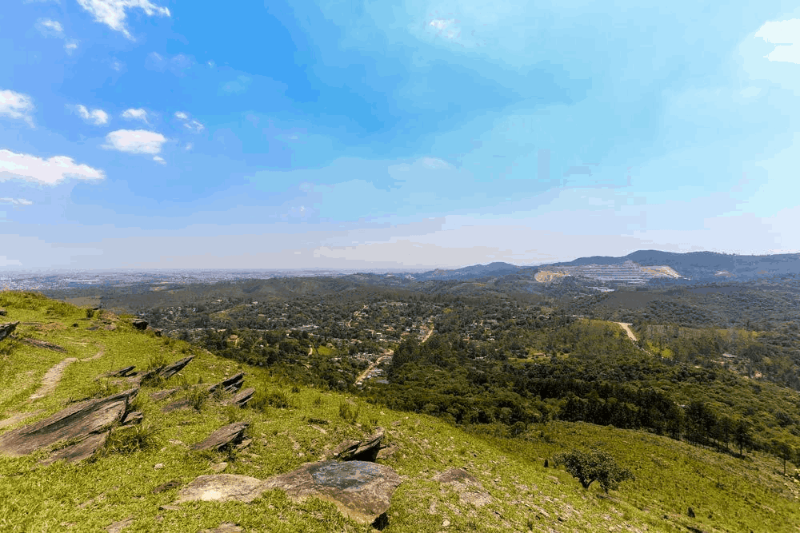

O Parque Estadual da Cantareira é uma área de preservação ambiental que oferece trilhas, mirantes e uma rica biodiversidade. É um ótimo lugar para os amantes da natureza e para quem deseja escapar do agito urbano.

O Bosque Maia é um espaço de preservação que oferece trilhas e uma rica biodiversidade. É um ótimo lugar para os amantes da natureza e para quem deseja escapar do agito urbano.

A Praça IV Centenário é um espaço de lazer. Seu nome homenageia os 400 anos de fundação de Guarulhos, celebrados originalmente em 1960, no passado, a área sediava a Estação Guarulhos da Estrada de Ferro Sorocabana.

O Lago dos Patos é um espaço de lazer que oferece atividades como paddle e caminhadas. É um local ideal para os amantes da natureza e para quem deseja aproveitar o tempo livre.

O Zoológico Municipal de Guarulhos é um espaço de lazer que oferece a oportunidade de observar uma ampla variedade de animais nativos e exóticos. É um local ideal para os amantes da natureza e para quem deseja aproveitar o tempo livre.

O Mirante Morro do Nhangussu é um espaço de lazer que oferece vistas panorâmicas da cidade. É um local ideal para os amantes da natureza e para quem deseja aproveitar o tempo livre.